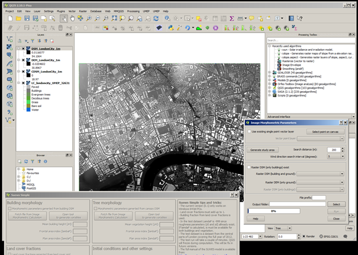

Note
Please report issues with the manual on the GitHub page.
9.2. Urban Energy Balance - SUEWS Advanced¶
9.2.1. Introduction¶
The tutorial Urban Energy Balance - SUEWS Introduction should be completed first. This tutorial is designed to work with QGIS 2.18.
9.2.1.1. Objectives¶
- To explore the link between QGIS and SUEWS to include new site-specific information
- To examine how it affects the energy fluxes
9.2.1.2. Overview of steps¶
- Initially become familiar with SUEWS advanced which is a plugin that makes it possible for you to set all parameters that can be manipulated in SUEWS as well as execute the model on mutiple grids (Urban Energy Balance - SUEWS Spatial).
- Derive new surface information
- Run the model
9.2.2. How to Run from the UMEP-plugin¶
How to run SUEWS Advanced:
- Open the plugin which is located at UMEP -> Processor -> Urban Energy Balance -> Urban Energy Balance, SUEWS/BLUEWS (Advanced). This has most of the general settings (e.g. activate the snow module etc.) which are related to RunControl.nml.
- Use the Input folder:
- C:/Users/your_user_name/.qgis2/python/plugins/UMEP/suewsmodel/Input
- Create or enter an Output directory of your choice.
- From the Input folder - confirm the data are in there.
- Tick in Obtain temporal… and set Temporal resolution of output (minutes) to 60.
- Click Run
- Make sure that output files are created.
- You can now close the SUEWS/BLUEWS (Advanced)-plugin again.

Fig. 9.7 Interface for SUEWS Advanced version.
9.2.2.1. Sensitivity Test¶
The default dataset included in Suews Simple has parameters calculated from a source area model to obtain the appropriate values for the input parameters. Roughness parameters such as roughness length (z0) and zero plane displacement length (zd) are calculated using morphometric models. Now you will explore the differences in fluxes using the default settings or using input parameters from the geodata included in the test datasets available for this tutorial. Download the zip-file (see below) and extract the files to a suitable location where you both have reading and writing capabilities.
Data for the tutorial can be downloaded here
| Geodata | Name |
| Ground and building DSM | DSM_LondonCity_1m.tif (m asl) |
| Vegetation DSM | CDSM_LondonCity_1m.tif (m agl) |
| DEM (digital elevation model) | DEM_LondonCity_1m.tif (masl) |
| Land cover | LC_londoncity_UMEP_32631 |
They are all projected in UTM 31N (EPSG:32631). The three surface models originate from a LiDAR dataset. The land cover data is a mixture of Ordnance Survey and the LiDAR data.
- Open the geodatasets. Go to Layer > Add layer > Add Raster Layer. Locate the files you downloaded before (see above).
- A QGIS style file (.qml) is available for the land cover grid. It can found in C:Usersyour_user_name.qgis2pythonpluginsUMEP\ LandCoverReclassifier\. Load it in the Layer > Properties > Style > Style (lower left) Load file.
- Click Apply before you close so that the names of the classes also load. You can also get the properties of a layer by right-click on a layer in the Layers-window.
- If you have another land cover dataset you can use the LandCoverReclassifier in the UMEP pre-processor to populate with the correct values suitable for the UMEP plugin environment.
- Now take a moment and investigate the different geodatasets. What is the sparial (pixel) resolution? How is ground represented in the CDSM?
9.2.3. Generating data from the geodatasets¶
Make certain that you have the geodatafiles open. The file at the top (left hand side (LHS)) of the list is the one that is shown in the centre (figure below). You can swap their order using the LHS box.
Open SUEWS Simple.
Begin by adding the test dataset again.
Update the building morphology parameters (top left panel in Suews Simple).
To generate new values, click on Open tool.
This is another plugin within UMEP that can be used to generate morphometric parameters
Fig. 9.8 QGIS where Suews Simple and Image Morphometric Parameters (Point) is opened.
First, clear the map canvas from your two other plugin windows, e.g. as figure above.
If you use the default test data in SUEWS Simple - you can overwrite is as you go.
Locate the eddy covariance tower position on the Strand building, King’s College London. To find the position, consult Figure 1 (KSS) in Kotthaus and Grimmond (2014).
Use Select point on canvas and put a point at that location (left).
Generate a study area. Use 500 m search distance, 5 degree interval and click Generate study area.
A circular area will be considered. Enter the DSM and DEM files (i.e. the files you currently have in the viewer)
Click Run.

Fig. 9.9 Figure 3. Settings for Image Morphometric Parameters for buildings.
In the folder you specified two additional files will be present (i) isotropic - averages of the morphometric parameters (ii) anisotropic - values for each wind sector you specified (5 degrees).
Close this plugin
Click on Fetch file from… in the building morphology panel
Choose the isotropic file (just generated).
Do the same for vegetation (upper left panel, right). See figure below.
Instead of locating the point again you can use the existing point.
You still need to generate a separate study area for the vegetation calculation.
Examine the CDSM (vegetation file) in your map canvas. As you can see, this data has no ground heights (ground = 0). Therefore, this time Tick in the box Raster DSM (only buildings) exist.
Enter the CDSM as your Raster DSM (only buildings).

Fig. 9.10 Settings for Image Morphometric Parameters for vegetation
A warning appears that your vegetation fractions between the morphology dataset and land cover dataset are large. You can ignore this for now since the land cover dataset also will change.
Repeat the same procedure for land cover as you did for buildings and vegetation but instead using the Land Cover Fraction (Point) plugin.
Enter the meteorological file, Year etc. This should be the same as for the first run you made.
Now you are ready to run the model. Click Run.
{kind=link}
If you get an error window (figure below). This error is generate by SUEWS as the sum of the land cover fractions is not 1. If you calculate carefully, one part of a thousand is missing (this is probably a rounding error during data extraction). To fix this issue: add 0.001 to e.g. bare soil. Now run again.

Fig. 9.11 Possible error window from running SUEWS with new settings.

Fig. 9.12 The settings for running with geodata derived parameters (old version of GUI).
You are now familiar with the Suews Simple plugin. Your next task is to choose another location within the geodataset domain, generate data and run the model. If you choose an area where the fraction of buildings and paved surfaces are low, consider lowering the population density to get more realistic model outputs. Compare the results for the different area.
9.2.4. References¶
- Grimmond CSB and Oke 1999: Aerodynamic properties of urban areas derived, from analysis of surface form. Journal of Applied Climatology 38:9, 1262-1292
- Grimmond et al. 2015: Climate Science for Service Partnership: China, Shanghai Meteorological Servce, Shanghai, China, August 2015.
- Järvi L, Grimmond CSB & Christen A 2011: The Surface Urban Energy and Water Balance Scheme (SUEWS): Evaluation in Los Angeles and Vancouver J. Hydrol. 411, 219-237
- Järvi L, Grimmond CSB, Taka M, Nordbo A, Setälä H &Strachan IB 2014: Development of the Surface Urban Energy and Water balance Scheme (SUEWS) for cold climate cities, , Geosci. Model Dev. 7, 1691-1711
- Kormann R, Meixner FX 2001: An analytical footprint model for non-neutral stratification. Bound.-Layer Meteorol., 99, 207-224
- Kotthaus S and Grimmond CSB 2014: Energy exchange in a dense urban environment - Part II: Impact of spatial heterogeneity of the surface. Urban Climate 10, 281–307
- Onomura S, Grimmond CSB, Lindberg F, Holmer B, Thorsson S 2015: Meteorological forcing data for urban outdoor thermal comfort models from a coupled convective boundary layer and surface energy balance scheme. Urban Climate. 11:1-23 (link to paper)
- Ward HC, L Järvi, S Onomura, F Lindberg, A Gabey, CSB Grimmond 2016 SUEWS Manual V2016a, http://urban-climate.net/umep/SUEWS Department of Meteorology, University of Reading, Reading, UK
- Ward HC, Kotthaus S, Järvi L and Grimmond CSB 2016b: Surface Urban Energy and Water Balance Scheme (SUEWS): Development and evaluation at two UK sites. Urban Climate http://dx.doi.org/10.1016/j.uclim.2016.05.001
- Ward HC, S Kotthaus, CSB Grimmond, A Bjorkegren, M Wilkinson, WTJ Morrison, JG Evans, JIL Morison, M Iamarino 2015b: Effects of urban density on carbon dioxide exchanges: observations of dense urban, suburban and woodland areas of southern England. Env Pollution 198, 186-200
Authors of this document: Lindberg and Grimmond (2016)
9.2.5. Definitions and Notation¶
To help you find further information about the acronyms they are classified by T: Type of term: C: computer term, S: science term, G: GIS term.
| Definition | T | Reference/Comme nt | |
|---|---|---|---|
| DEM | Digital elevation model | G | |
| DSM | Digital surface model | G | |
| FAI (λF) | Frontal area index | S | Grimmond and Oke (1999), their figure 2 |
| GUI | Graphical User Interface | C | |
| LAI | Leaf Area Index | S | |
| PAI (λP) | Plan area index | S | |
| png | Portable Network Graphics | C | format for saving plots/figures |
| QGIS | G | www.qgis.org | |
| SUEWS | Surface Urban Energy and Water Balance Scheme | S | |
| Tif | Tagged Image File Format | C | format for saving plots/figures |
| UI | user interface | C | |
| UMEP | Urban Multi-scale Environmental predictor | C | |
| z0 | Roughness length for momentum | S | Grimmond and Oke (1999) |
| zd | Zero plane displacement length for momentum | S | Grimmond and Oke (1999) |
9.2.6. Further explanation¶
9.2.6.1. Morphometric Methods to determine Roughness parameters:¶
For more and overview and details see Grimmond and Oke (1999). This uses the height and spacing of roughness elements (e.g. buildings, trees) to model the roughness parameters. UMEP has tools for doing this: Pre-processor -> Urban Morphology
9.2.6.2. Source Area Model¶
For more details see Kotthaus and Grimmond (2014b). The Kormann and Meixner (2001) model is used to determine the probable area that a turbulent flux measurement was impacted by. This is a function of wind direction, stability, turbulence characteristics (friction velocity, variance of the lateral wind velocity) and roughness parameters.